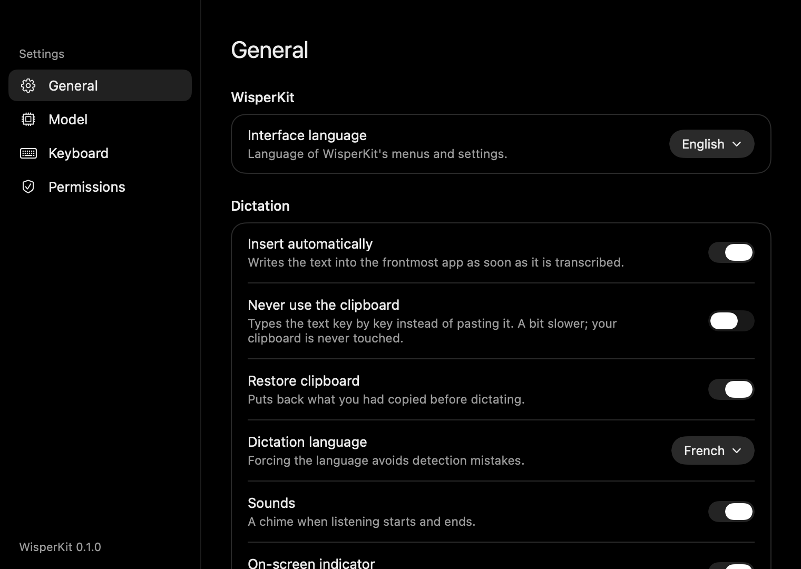
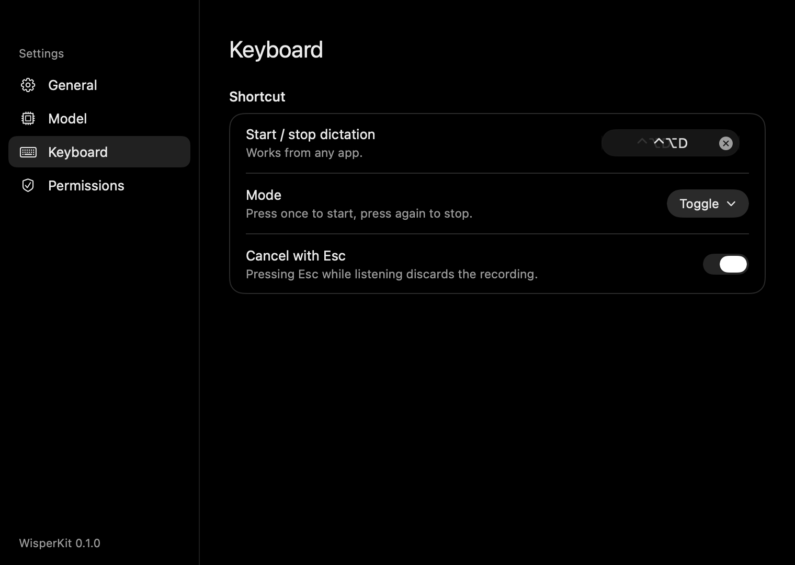
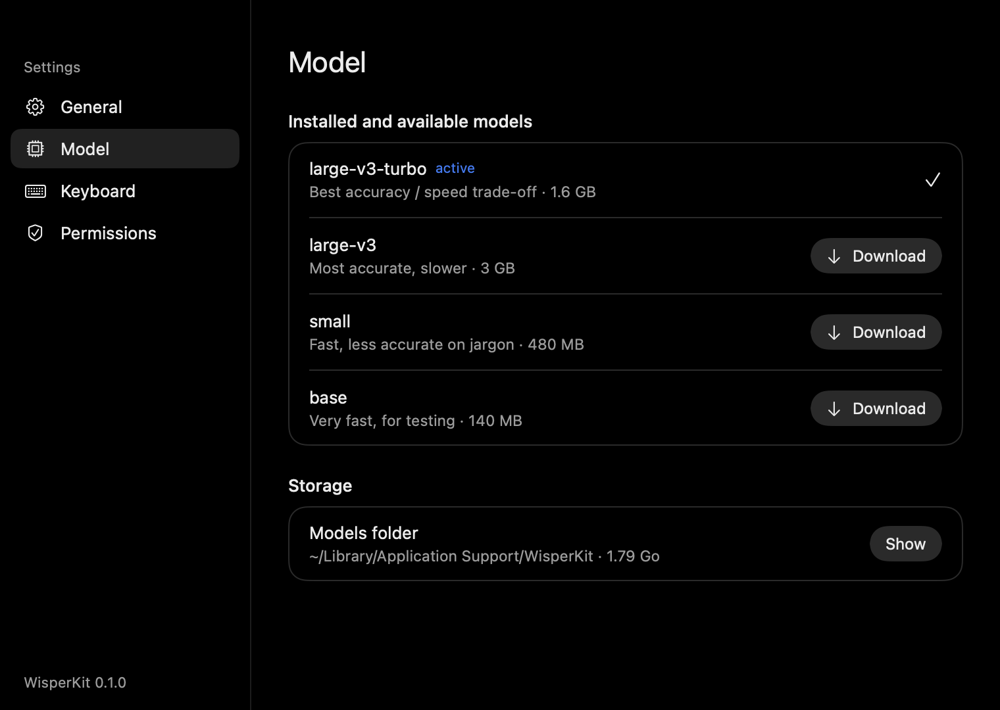
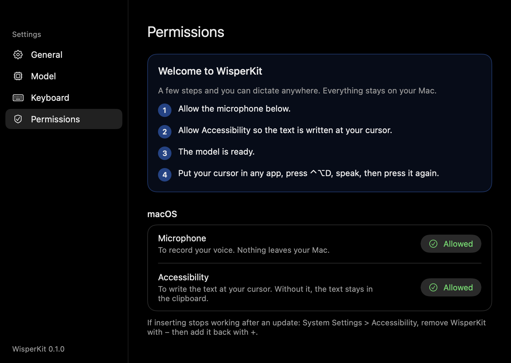

Your voice, typed wherever your cursor is.
Whisper dictation that runs on your Mac or PC. Nothing is uploaded.
Can you review the pull request before lunch?
One shortcut, in every app.
Dictate anywhere
The text is pasted at the cursor and your clipboard comes back afterwards. Or have it typed key by key, clipboard untouched.

Toggle or hold
Press once to start and once to stop, or hold the shortcut while you speak. Esc cancels.

Pick a model
large-v3-turbo stays warm in memory and turns a few seconds of speech into text in about one to three seconds.

Guided setup
A welcome window asks for the microphone, the Accessibility permission and downloads the model once.

Speak French. Get English.
Turn on Translate to English and speak in any language Whisper knows. Leave it off and the text stays in the language you spoke, detected automatically.
You sayOn fait le point demain à dix heures ?
WisperKit typesShall we catch up tomorrow at ten?
Your audio never leaves the machine.
- Recorded in memory, transcribed on device, then discarded.
- One network request, ever: the model download from Hugging Face.
- No account, no analytics, no telemetry. Read the source.
Four Whisper models, one click apart.
| Model | Size on Mac | Best for |
|---|---|---|
large-v3-turbo default | 1.6 GB | Accuracy and speed, balanced |
large-v3 | 3 GB | Maximum accuracy, best translations |
small | 480 MB | Older or low-memory Macs |
base | 140 MB | Quick tests |
On Windows the same models run through whisper.cpp, on the CPU or the GPU via Vulkan.
Free, open source, two minutes to set up.
macOS 15 on Apple Silicon, or Windows 10 (1809) and 11 on x64 or ARM64.
Homebrew
brew tap eldriic/tap
brew trust eldriic/tap
brew install --cask wisperkitMac download
Drag the app from the DMG into Applications. It is not notarized yet, so allow it once in Privacy and Security.
Download the DMGWindows
Run the setup, no administrator rights needed. SmartScreen may ask once: More info, then Run anyway.
Most PCs are x64. ARM64 is for Snapdragon laptops (Surface Pro X, Copilot+ PCs).